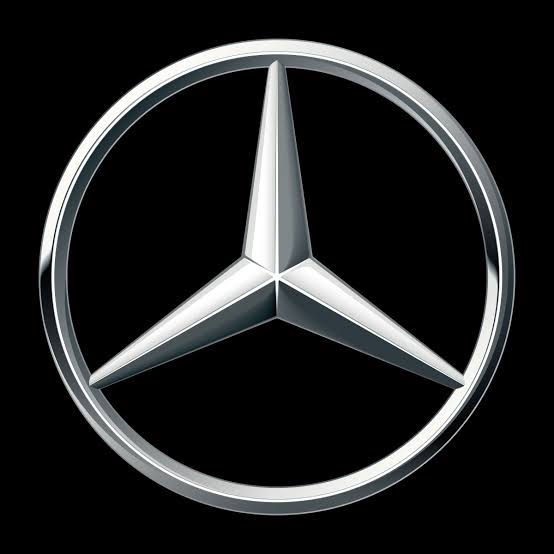
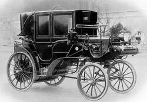
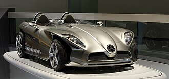

„Мерцедес-Бенц“ (на немски: Mercedes-Benz) е търговска марка и едноименна компания – производител на премиум автомобили, камиони, автобуси и други превозни средства, който е част от немския концерн „Мерцедес-Бенц Груп“. Това е една от най-разпознаваемите автомобилни марки в света.Централата на Mercedes-Benz се намира в Щутгарт, Баден-Вюртемберг, Германия.

1 октомври 1883 – Карл Бенц основава компанията Benz & Co Rheinische Gasmotorenfabrik в Манхайм заедно с бизнесмена Макс Каспар Розе и търговеца Фридрих Вилхелм Еслингер. 16 декември и 23 декември 1883 – Готлиб Даймлер защитава свой „Газов двигател със запалване в горивна камера“ с патент „DRP No. 28022“. Също получава патент „DRP No. 28243“ за системата „Регулиране на скоростта на двигателя с помощта на изпускателен клапан“. Тези два патента са основата за първия бързооборотен двигател с вътрешно горене. 29 август 1885 – Даймлер регистрира „Reitwagen“ за „газов или бензинов двигател“ като патент „DRP No. 36423“. 29 януари 1886 – За своята триколесна моторна каляска Карл Бенц получава патент „DRP No. 37435“ – „свидетелство за раждане“ на автомобила.


Mercedes-Benz има цяла гама от пътнически автомобили, лекотоварни и тежкотоварни автомобили. Превозните средства се произвеждат в цял свят. Марките Smart (за градски автомобили) и Maybach са също произвеждани от Daimler AG.